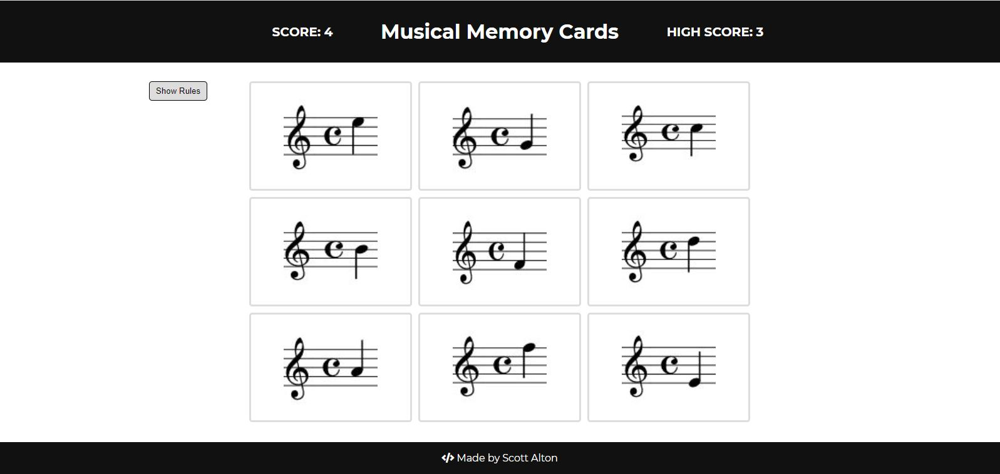
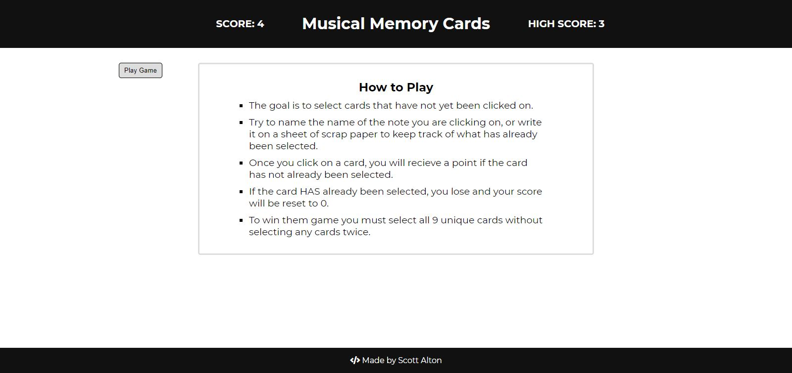

Today was spent diving into the React Router docs and building out a working navbar.
Although not the most groundbreaking topic in terms of excitement, React Router seems pretty straightforward to understand and implement in projects, and that's greatly appreciate since I've been through the tedious process of building a front-end router with JS. This ended up working, but with a ton of work and refactoring, but it was neat to see familiar terms in the React Router docs, and I felt pretty confident understanding what was being stated.
Next up, the shopping cart project!
Here is a screenshot of the musical memory card game:
 